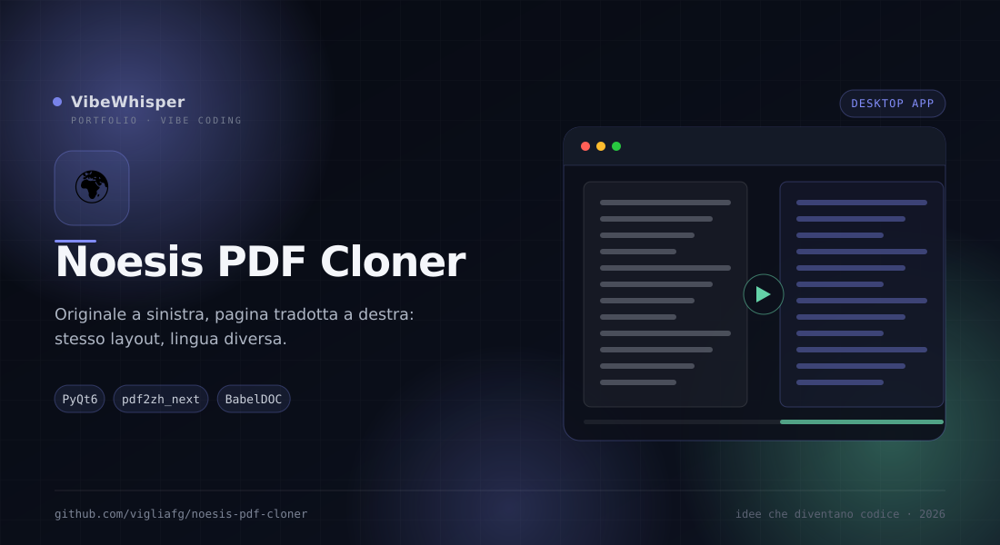

Noesis PDF Cloner
App desktop che apre un PDF e mostra a sinistra la pagina originale, a destra la stessa pagina tradotta nella lingua scelta con il layout preservato.
📖 Cos'è
Noesis PDF Cloner è un'app desktop derivata da Noesis PDF Reader Lite che traduce un PDF mantenendone l'impaginazione: testo, immagini, tabelle e numeri di pagina restano al loro posto, cambia solo la lingua. La pagina tradotta è prodotta da pdf2zh_next v2 con typesetter BabelDOC, ed è mostrata accanto all'originale in una vista affiancata. La traduzione avviene on-demand pagina per pagina, con cache su disco separata per motore e coppia linguistica.
👤 A chi serve
È pensata per chi studia o lavora su documenti tecnici in lingua: paper scientifici, manuali, contratti, report e libri. È utile quando non basta estrarre il testo, perché la posizione di figure, tabelle e didascalie è parte del significato. Fa per te se vuoi leggere una pagina tradotta senza perdere il riferimento visivo all'originale e se ti serve esportare solo alcune pagine, non tutto il documento.
⚙️ Come funziona
L'app apre il PDF con PyMuPDF e mostra due pannelli sincronizzati. Quando premi ▶ Traduci, il motore selezionato (Google, Bing o LLM) genera il clone della pagina corrente con pdf2zh_next; il risultato viene messo in cache su disco per motore e lingua. Google usa una catena gratuita con fallback progressivi, Bing è il traduttore integrato di pdf2zh_next, LLM passa da OpenRouter. Le pagine si traducono una alla volta; le richieste interne dell'LLM possono essere parallelizzate dalle impostazioni. L'export guidato in 5 passi permette di scegliere pagine, lingue, motore e formato senza perdere il riferimento alla numerazione fisica o stampata.
🎯 Perché Noesis PDF Cloner
Perché un PDF tradotto deve restare lo stesso documento, non un riassunto. Noesis PDF Cloner ti fa vedere subito se il risultato è fedele, pagina accanto a pagina, e ti dà il controllo su cosa tradurre e su come esportarlo.
✨ Caratteristiche Principali
- Vista affiancata — Originale a sinistra, clone tradotto a destra, con zoom sincronizzato e navigazione tra le pagine
- Tre motori — Google con catena gratuita, Bing integrato e LLM via OpenRouter, selezionabili al volo
- Traduzione on-demand — La pagina parte solo dal pulsante ▶ Traduci: niente traduzioni automatiche cambiando pagina
- Cache per motore — Cache su disco separata per motore e coppia linguistica, con conferma prima di sovrascriverla
- Export guidato — Wizard in 5 passi con pagina corrente, intervallo o lista libera, anteprime e numerazione fisica/stampata
- Tre output — PDF unico, ZIP di pagine singole o cartella di pagine separate
- Azioni di pagina — Salva, esporta, traduci la successiva, ritraduci, apri nel visualizzatore o cancella la cache
- Tema e avvisi — Chiaro, scuro o come il sistema; notifica e suono a fine lavoro, senza standby durante la traduzione
- Chiave protetta — La chiave OpenRouter è salvata in un file per-utente 0600, con verifica e messaggi di errore classificati
🏗️ Come Funziona
- Apri un PDF con
./run.sh /percorso/file.pdfoppure dal menu File - Scegli la lingua di destinazione e il motore (Google, Bing o LLM) nel pannello destro
- Premi ▶ Traduci: la pagina corrente viene clonata e messa in cache
- Naviga con TOC, numero di pagina o scorciatoie: al ritorno la pagina è istantanea
- Apri 💾 Esporta e scegli pagine, lingue, motore e formato (PDF, ZIP o cartella)
- A fine processo copia il risultato in Download dall'avviso di completamento
📦 Installazione
# Requisiti: Python 3.12 e uv git clone https://github.com/vigliafg/noesis-pdf-cloner.git cd noesis-pdf-cloner # Crea i due ambienti (app PyQt6 + motore pdf2zh_next) e apre la GUI ./run.sh # Apri direttamente un PDF ./run.sh /percorso/file.pdf # La chiave serve solo per il motore LLM export OPENROUTER_API_KEY="sk-or-..."
💡 Casi d'Uso
- Paper scientifici — Leggere un articolo in italiano mantenendo figure, tabelle e riferimenti
- Manuali tecnici — Tradurre solo le pagine che servono, senza processare tutto il volume
- Contratti e report — Confrontare originale e traduzione con lo stesso layout sotto gli occhi
- Studio delle lingue — Leggere pagina per pagina e salvare le traduzioni già pronte in cache